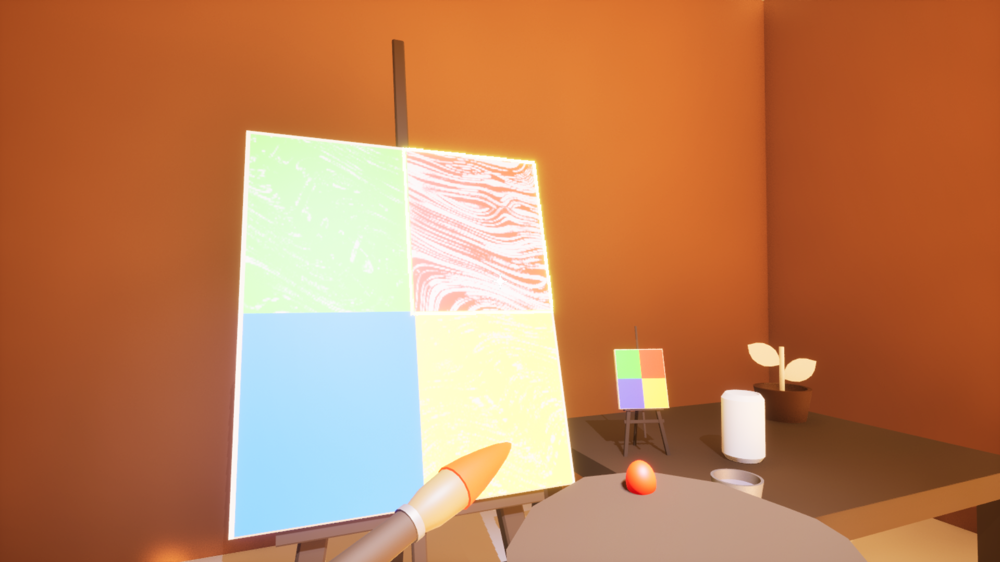

Prototype
Fake It Till U Make It

Idea: Take the color of your surroundings and use it to replicate paintings
Objectives: Create a working prototype on Unreal Engine in a week (made for a class)
Learnings: Using GitHub on an Unreal Engine project, working as a two-person team
Notes: I learned that I need to spend more time on planning out the steps needed to achieve my goal, had to rework the entire interaction system to adjust the visual feedback of the game